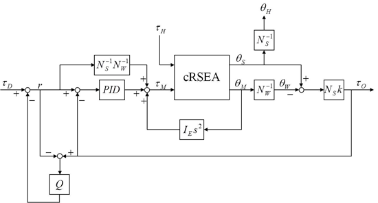
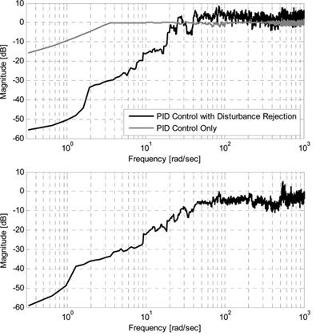

Design and Control of a Compact Rotary Series Elastic Actuator (cRSEA)
Motivation and Approach
In the NMAS, an actuator is essential for providing active assistance to users to facilitate their walking. Precise and large torque generation, back drivability, low output impedance, and compactness of hardware are important requirements for human assistive robots. Considering the requirements above, a compact rotary elastic actuator (cRSEA) was designed for knee joint assistance. To magnify the torque generated by an electric motor in the limited space of the compact device, a worm gear was utilized. There are backlash, friction, unmodelled dynamics, and disturbance from human-robot interactions in the control system of cRSEA, which makes the controller design challenging. A robust control technique was proposed for the cRSEA.
Main Results
With the worm gear mechanism, the cRSEA may generate assistive torque up to 10.86 Nm under normal situations and 130Nm under extreme situations for a short duration while achieving backdrivability. A PID control algorithm was combined with a disturbance observer (DOB) and torque feedforward control to provide robust and accurate torque control of the actuator [1]. Moreover, a ctitious gain method was proposed to calculate the desired assistive torque for the actuator to generate [1, 2]. The figures below show the controller structure and the frequency response of the torque error output, respectively.

Block diagram of the controller for cRSEA

(upper) Frequency response from desired torque to torque error
(lower) Frequency response from human joint motion to torque error
Recent Key Publications
- K. Kong, J. Bae and M. Tomizuka, "A Compact Rotary Series Elastic Actuator for Human Assistive Systems," IEEE/ASME Transactions on Mechatronics, vol. 17, no. 2, pp. 288-297, 2012
- K. Kong and M. Tomizuka, "Control of exoskeletons inspired by ctitious gain in human model," IEEE/ASME Transactions on Mechatronics, vol. 14, no. 6, pp. 689–698, 2009